Onglet Saisie des Concentrations
Une fois
le Plan de Monitoring défini, le fumigateur est prêt pour saisir des mesures de
concentration dans l'onglet Saisie des Concentrations.
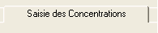
L'exemple ci-après représente
l'onglet Saisie des concentrations avant la saisie des détails. Notez la portion
supérieure (entourée d'une ligne en pointillé) de l'onglet où les champs de date
et d'horaire de Début d'injection, de Début d'exposition et de Fin d'exposition
sont dotés de menus déroulants pour définir ces entrées clés. Le fumigateur
paramètre ces événements sur cet onglet et l'onglet Suivi dosage. Ces termes
sont définis ci-dessous :
Début injection est l'horaire d'injection de fumigant dans
une enceinte ou dans une chambre. Début exposition est l'horaire où l'accumulation de CT (dosage) commence. Généralement, ceci devrait être à l'équilibre.
Fin Exposition est l'horaire où l'accumulation de CT (dosage) se termine.
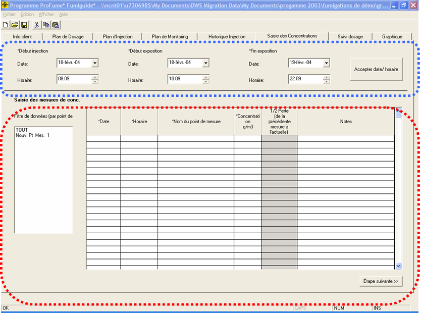
Maintenant notez la portion
Saisie des Concentrations de cet onglet entourée d'une ligne pointillée.
C'est ici que sont saisies les mesures de concentrations, triées par point de mesure et 1/2 PERTE affichée par point de mesure.
L'exemple d'écran Saisie des concentrations ci-dessous
montre quatre séries de mesures de concentrations pour l'ensemble des 6 points de mesure. L'écran Saisie des concentrations contenant des données, le fumigateur peut utiliser la barre de défilement vertical pour se déplacer dans l'ensemble de la série de données. Notez que les données de TOUS les points de mesure apparaissent dans cet exemple.
NOTE : Il est vivement recommandé de sauvegarder fréquemment pendant la saisie des données.
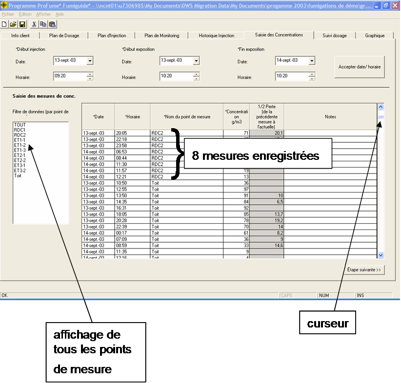
Si le fumigateur souhaite voir uniquement les données d'un seul point de mesure, ce point de mesure devra être sélectionné dans la liste Filtre de données.
Si le fumigateur veut voir les données uniquement de certains points de mesure, ces points de mesure peuvent ensuite être sélectionnés dans la liste Filtre de données en maintenant le bouton "Ctrl" du clavier enfoncé et en cliquant sur les points de mesure désirés de la liste. Les boutons "Ctrl" sont situés à gauche et à droite de la barre d'espace des claviers d'ordinateurs standard.
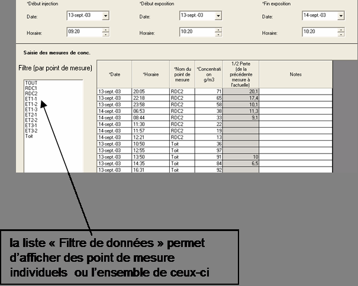
Notez dans
l'exemple suivant que les points de mesure sont affichés dans l'ordre alphabétique, et ensuite dans l'ordre chronologique dans les groupements par points.
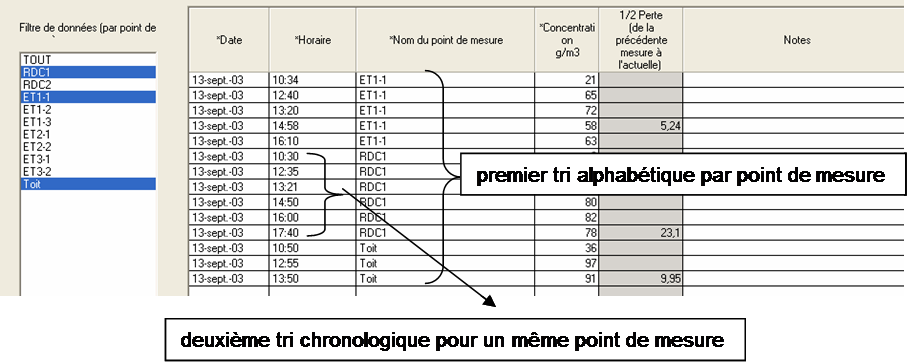
Les lignes de monitoring
individuelles ou multiples dans cet onglet peuvent être copiées et collées ailleurs dans le tableau, en sélectionnant la ligne désirée (la ligne sera affichée en surbrillance bleue). Ensuite, cliquez avec le bouton droit et sélectionnez Copier. Après avoir choisi une ligne ouverte dans l'onglet ou sélectionné un point de mesure via le Filtre de données, cliquez avec le bouton droit et sélectionnez Coller.
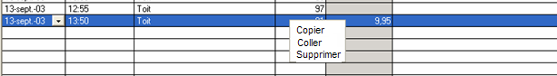
Des lignes de monitoring individuelles peuvent être
supprimées à
l'aide d'un processus similaire, mais vous devrez sélectionner Supprimer dans le menu de clic droit. Notez que des raccourcis clavier sont disponibles ici, Copier (Ctrl + C), Coller (Ctrl + V) et Supprimer (Suppr). (Le bouton Suppr est situé au dessus du bouton retour arrière sur les claviers d'ordinateur standard).
Une
autre fonction pratique dans l'onglet Saisie des concentrations est la capacité à saisir des dates manuellement ou en sélectionnant la date dans un calendrier qui s'affiche quand la flèche calendrier est sélectionnée dans la colonne Date.
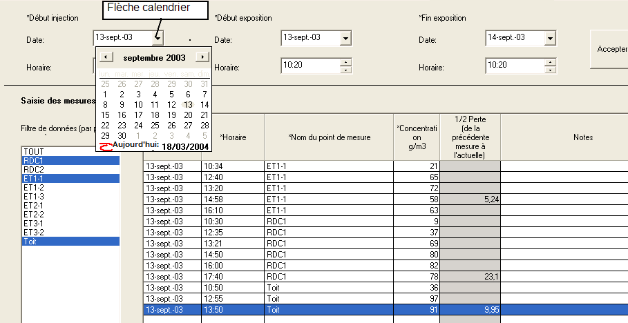
Dans la colonne Horaire, l'horaire correct de la mesure de concentration peut être modifié en double cliquant sur une cellule dans cette colonne. Ensuite, le fumigateur peut naviguer parmi les segments Heure, Minute de cette colonne, tel que le montre les exemples ci-dessous. Les points de mesure sont affichés dans l'ordre chronologique.

Tous les points de mesure définis dans l'onglet Plan de monitoring sont disponibles dans un menu déroulant sur l'onglet Saisie des concentrations. Notez également dans l'exemple suivant que la 1/2 Perte n'a pas été calculée tant qu’on n’a pas observé le pic de concentration puis une diminution.
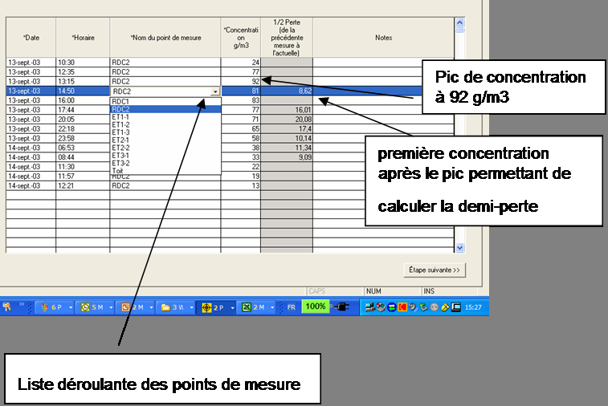
Des notes succinctes peuvent être saisies dans la colonne
Notes de chaque point de mesure.
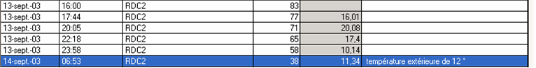
Lorsque davantage de mesures de
concentrations sont saisies, des calculs de 1/2 Perte supplémentaires sont effectués et affichés.
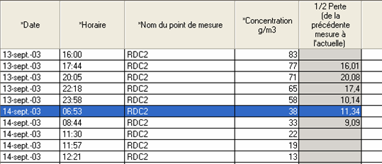
La 1/2 PERTE est calculée
pour un point de mesure quand le fumigateur sélectionne un autre point de mesure de la liste Filtre de données ou va à un autre onglet au programme.
Message
d'avertissement lié à l'onglet Saisie des Concentrations
Le message suivant s'affiche si le fumigateur clique sur Étape suivante dans
l'onglet Saisie des concentrations sans saisir les horaires importants des
étapes de fumigation (Début Injection, Début Exposition et Fin
Exposition).
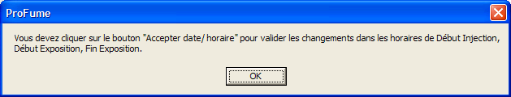
Le message d'avertissement ci-après apparaît lors de la suppression d'une rangée dans cet onglet.
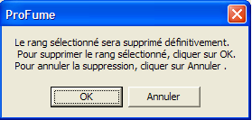
Alors que des données sont saisies dans l'onglet Saisie des concentrations, le fumigateur peut passer de cet onglet à l'onglet Suivi dosage pour contrôler l'état de la fumigation par zone.